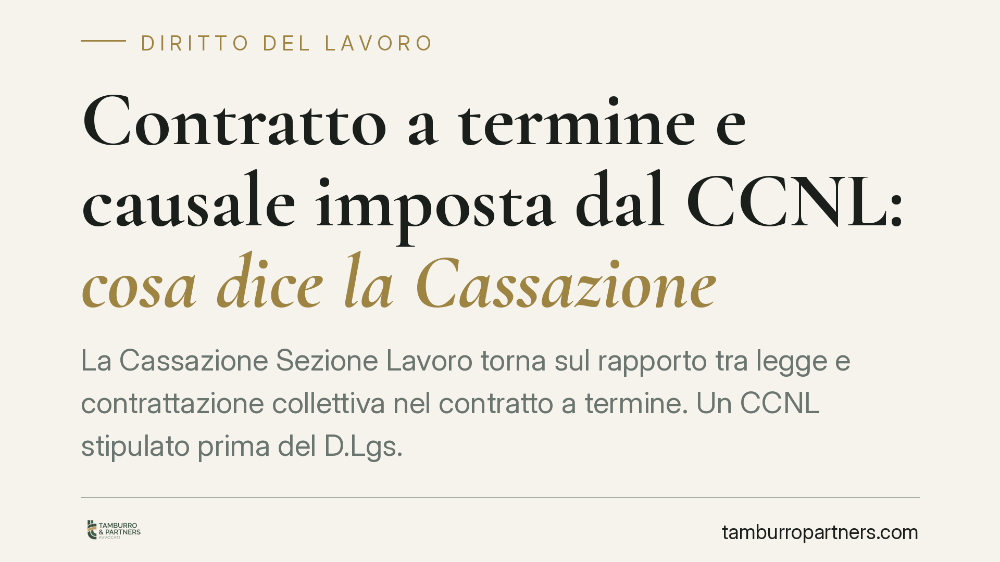

Contratto a termine e causale imposta dal CCNL: cosa dice la Cassazione
La Cassazione Sezione Lavoro torna sul rapporto tra legge e contrattazione collettiva nel contratto a termine. Un CCNL stipulato prima del D.Lgs. 81/2015 non può reintrodurre l'obbligo di indicare una causale, quando la legge ha reso il contratto acausale entro i limiti temporali fissati. Una precisazione che incide su assunzioni, contenzioso e strategia difensiva di aziende e lavoratori.

Il fatto
Un lavoratore impiegato nel settore della logistica ha impugnato il proprio contratto a tempo determinato, sostenendone la nullità per mancata indicazione della causale. A suo dire, il CCNL Logistica, Trasporto merci e Spedizioni imponeva la specificazione delle ragioni giustificatrici, requisito che nel caso concreto mancava.
La questione arriva in Cassazione. Il punto è netto: un contratto collettivo stipulato prima dell'entrata in vigore del D.Lgs. 81/2015 può ancora pretendere la causale, quando la legge nel frattempo ha reso il contratto a termine "acausale" entro i limiti di durata previsti?
Inquadramento normativo
Il D.Lgs. 81/2015, nel testo applicabile ratione temporis, ha introdotto il regime dell'acausalità: il contratto a termine può essere stipulato senza indicare una specifica ragione giustificatrice, purché entro il limite di durata fissato dalla legge (originariamente 36 mesi, poi modificato dagli interventi successivi). La "causale" – cioè la ragione oggettiva che giustifica l'apposizione del termine – torna a essere richiesta solo al superamento di determinate soglie temporali o nei casi di proroga e rinnovo previsti dalla norma.
Il nodo interpretativo riguarda la gerarchia delle fonti. Un CCNL anteriore alla riforma conteneva clausole modellate sul regime previgente, che imponevano la causale. La Cassazione chiarisce che tali clausole non sopravvivono automaticamente: la disciplina legale sopravvenuta, quando riscrive la struttura essenziale del contratto, prevale sulla contrattazione collettiva preesistente. Il contratto collettivo può integrare o specificare la legge nei margini che questa gli riconosce, ma non può reintrodurre un requisito che il legislatore ha espressamente eliminato.
In sostanza: l'acausalità è una scelta di sistema. La mancata indicazione della causale, dove la legge non la richiede, non determina la nullità del termine, nemmeno se un CCNL anteriore alla riforma la pretendeva.
Implicazioni pratiche
Per i datori di lavoro, la pronuncia riduce un margine di incertezza. Chi ha stipulato contratti a termine acausali entro i limiti di legge, confidando nella disciplina statale, non vede vanificata quella scelta da clausole collettive superate. Le impugnazioni fondate esclusivamente sull'assenza di causale imposta da un CCNL anteriore al 2015 hanno oggi una tenuta debole.
Per i lavoratori, cambia l'impostazione difensiva. L'assenza della causale non è più, di per sé, un vizio spendibile quando il contratto rientra nel perimetro dell'acausalità legale. La contestazione va spostata su altri profili: superamento delle soglie temporali, illegittimità di proroghe e rinnovi, abuso nella successione di contratti, difetto della forma scritta.
Attenzione, però, al fattore temporale. Le regole applicabili dipendono dalla data di stipula del contratto e dalla versione del D.Lgs. 81/2015 vigente in quel momento. Gli interventi normativi successivi hanno più volte modificato durata massima e regime delle causali. Ogni valutazione va ancorata alla disciplina realmente applicabile al singolo rapporto.
Cosa fare in concreto
- Verificate la data di stipula di ciascun contratto a termine e individuate la versione del D.Lgs. 81/2015 applicabile: da lì dipende se la causale fosse o meno richiesta.
- Distinguete tra primo contratto, proroga e rinnovo: il regime della causale cambia in funzione della durata complessiva e del tipo di operazione.
- Non affidatevi alle sole clausole del CCNL anteriore alla riforma: consigliamo di raffrontarle sempre con la disciplina legale sopravvenuta.
- Datori di lavoro: rivedete i modelli contrattuali standard per allinearli all'attuale quadro normativo ed evitare contenzioso evitabile.
- Lavoratori: se intendete impugnare, concentrate l'analisi sui profili ancora rilevanti (soglie temporali, abuso della successione, forma), rispettando i termini di decadenza per l'impugnazione.
La decisione conferma un principio di ordine generale: la contrattazione collettiva opera nei limiti che la legge le assegna e non può resuscitare requisiti che il legislatore ha consapevolmente rimosso. Un'indicazione utile a orientare tanto le scelte gestionali quanto le valutazioni difensive.
Disclaimer
Contributo informativo a cura di Tamburro & Partners – Avv. Giuseppe Tamburro. Non costituisce parere legale.
Ogni storia di lavoro ha i suoi tempi.
Se gestisci HR e vuoi un confronto su contenzioso, ispezioni o licenziamenti, scrivi allo studio. Ti rispondiamo entro un giorno lavorativo.